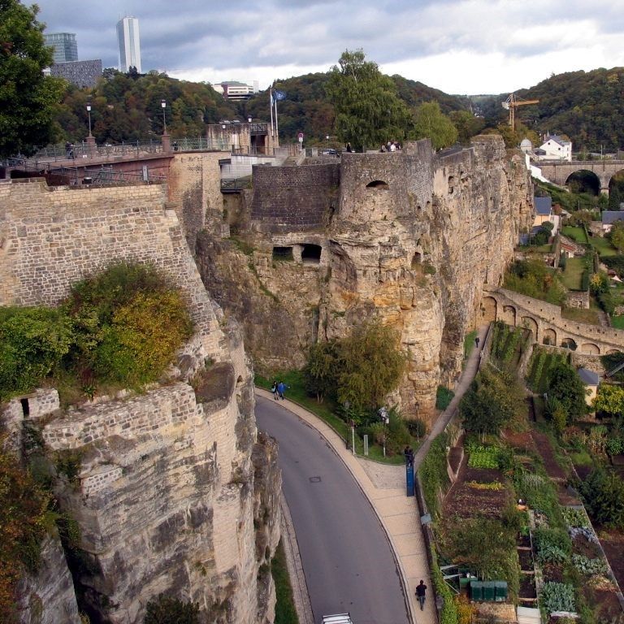

Сплав богатейшей истории, изысканности, красоты старинной и современной архитектуры, почитание традиций, самый состоятельный монарх Европы, неподражаемая кухня и богатая жизнь – вот что вас ждет в крошечном государстве Люксембург.
Великое Герцогство Люксембург cчитается одной из самых зеленых стран Европы. Ежегодно сюда приезжают тысячи туристов, чтобы окунуться в атмосферу средневековья, убежать от суеты больших городов и почувствовать дух старой Европы. Каждый населенный пункт Люксембурга очарователен по-своему.
Одноименная столица Герцогства — Люксембург. Город возведен на высоте 334 м над уровнем моря, в точке слияния рек Альзет и Петрюс. Он делится на две части — Нижний и Верхний города, соединенные красивыми мостами, придающими ему особенную романтику. В Нижнем городе находятся многочисленные банки, финансовые учреждения, правления компаний и пивоваренные заводы. Верхний город — это древняя люксембургская крепость, таинственное и прекрасное место, со множеством памятников архитектуры. Частично высеченная в стене капелла Сен-Кирен VI века, готическая церковь Сен-Мишель, герцогский дворец с высокими башенками и шпилями, бывшая ратуша — перенесут вас на многие века назад. Лесопарк со множеством аллей, тропинок, среди которых спрятаны острые скалы и ущелья, долины рек Альзета и Петрус радующие глаз изумрудной зеленью, — все это делает Люксембург одним из самых зеленых городов Европы.
В самом сердце Европы спрятано миниатюрное, но от этого не менее значимое, Великое Герцогство Люксембург. Это одно из древнейших государств в мире, выросшее из старинного замка.
Вся территория Люксембурга расположена на возвышенностях, из-за чего его часто называют “лучшим балконом” или “обзорной площадкой” Европы.
Второе - более верное, так как вся страна представляет собой единую достопримечательность, каждый метр и уголок которой пропитаны историей разных эпох. Живописные средневековые замки, скалистые ущелья региона Мюллерталь, крутые скалы в долине реки Альзет, винные дегустации в долине Мозеля, бескрайние виноградники, многочисленные мосты, шикарные панорамные виды на окрестности — все это наполнит ваше пребывание в Люксембурге самыми невероятными эмоциями и яркими впечатлениями. В этой стране созданы первоклассные условия для отдыха и туризма на любой вкус.
 Казематы дю Бок (Casemates du Bock) - это подземный комплекс оборонительных сооружений, расположенный в историческом центре Люксембурга. Они были построены в XVII веке для защиты города от врагов и использовались в качестве казарм и складов во время Второй мировой войны.
Казематы дю Бок имеют общую длину около 23 км и состоят из множества туннелей, залов и комнат, расположенных на разных уровнях. Внутри можно увидеть оригинальные элементы оборудования и оружия, а также узнать историю города и его обороны.
Сегодня Казематы дю Бок являются одной из главных туристических достопримечательностей Люксембурга и привлекают тысячи посетителей каждый год. Они также являются частью Всемирного наследия ЮНЕСКО и символом национальной гордости Люксембурга.
Мост Адольфа (Adolphe bridge)- неофициальный национальный символ города, представляя собой независимость Люксембурга, и является одной из главных туристических достопримечательностей.
Несмотря на то, что мосту уже более 100 лет, он также известен как "Новый мост", сравнительно со "старым" мостом в провинции Passerelle, который был построен между 1859 и 1861 гг.
Первый камень моста Адольфа был заложен 14 июля 1900, но открыт он был чуть более трех лет спустя. Первоначально по мосту проезжали как автомобили, так и железнодорожный транспорт.
Мост Адольфа впервые был отремонтирован в 1961 году. Последние работы по реконструкции сооружения начались в 2011 году в связи с проектом городского трамвая LuxTram.
Аббатство Ноймюнстер (Neumunster Abbey)– одна из достопримечательностей города Люксембург, столицы Люксембурга. Аббатство построено монахами из ордена Святого Бенедикта в начале XVI века. Этому предшествовал ряд печальных обстоятельств, в числе которых практически полное разрушение старой обители. Однако и более новое здание оказалось не самым надёжным и практически полностью сгорело 1684 году. Восстановили аббатство лишь через несколько лет, однако теперь в строительстве использовался камень и кирпич. В 1720 году комплекс был в значительной степени расширен. Пристроены более функциональные помещения и залы, несколько зданий служебного типа.
За годы существования аббатство Ноймюнстер использовалось и как резиденция духовенства Люксембурга, и как тюремный, и полицейский участки, а при пруссах здесь даже размещались казармы. В период Второй мировой войны оккупировавшие Люксембург немцы не преминули использовать помещения здания в качестве оружейных и продовольственных складов. В конце XX века аббатство Ноймюнстер было отдано для размещения в его стенах Европейского института классических культурных маршрутов. Также, после реконструкции и ремонта в А 2004 году, сюда был перенесён городской Культурный центр.
Сегодня здесь на регулярной основе проводятся праздничные концерты, выставки, обучающие семинары, классические и современные музыкальные представления.
Собор Люксембургской Богоматери (Cathédrale Notre-Dame de Luxembourg) - удивительный по изящности позднеготический храм с элементами ренессансного стиля — редкий для всей Европы образец религиозной архитектуры, сочетающий сразу две исторические вехи.
Главный собор Люксембурга был построен для ордена иезуитов в начале XVII в. К тому времени в европейской архитектуре уже господствовал стиль ренессанс, однако архитектор дю Блок решил взять за основу готику, благодаря чему собор, не отличающийся внушительными размерами, выглядит величественно и изящно.Внутри хранится чудотворный образ Богоматери Утешительницы, в честь которой собор, ставший в 1870 г. кафедральным, получил свое нынешнее название. Статуя Богоматери установлена в алтарной части и раз в году, на пятое воскресенье после Пасхи, становится объектом массового паломничества – ведь святая Дева Люксембургская считается покровительницей города и Герцогства.
Неизгладимое впечатление производит и убранство храма: резные колонны, мавританские узоры, огромные витражи, скульптуры, живые цветы на алтаре и неожиданные гобелены на стенах. Высокие своды и преобладающие в интерьере теплые оттенки дарят ощущение света и простора. Отдельного внимания заслуживают два великолепных органа и крипта, где находится усыпальница Великих герцогов Люксембургских.
Мемориал «Золотая Дама» - одна из главных достопримечательностей страны, которая находится на площади Конституции.
Этот памятник был создан в 1923 году Клаусом Сито, как дань всем жителям Люксембурга, которые добровольно ушли на фронт во время Первой мировой войны. В 1914 году сохранявший нейтралитет Люксембург оккупировали немецкие войска. Тогда чуть менее четырех тысяч человек покинули свою родину и вступили в ряды союзника – французской армии. Две тысячи люксембуржцев погибли, защищая свою страну от врага. Причем всего на тот момент в стране жили 260 тысяч человек.
Все то, что помогло отважным жителям Люксембурга отстоять честь и независимость своей страны, было заключено в монументе «Золотая Дама» – символе независимости Люксембурга. Но у печальной истории, предшествовавшей созданию монумента, было продолжение. Во время Второй мировой войны город был захвачен немцами, которые в 1940 году разрушили мемориал. К счастью, некоторые его части удалось спасти. После окончания войны мемориал был восстановлен только частично. В своем первоначальном виде монумент был воссоздан только в 1985 году.
Сейчас «Золотая Дама» считается не только символом Первой мировой войны, но и знаком памяти обо всех погибших в ходе Второй мировой войны. Первое, что бросается в глаза всем, кто видит мемориал – огромный гранитный обелиск высотой в 21 метр. Сверху на нем находится позолоченная статуя, давшая имя всему мемориалу – женщина, держащая в руках лавровый венок. Этот венок она как бы возлагает на голову всех люксембуржцев. Еще две важных детали монумента – фигуры, расположенные у подножия обелиска. Они символизируют солдат, которые добровольно ушли отстаивать честь соей страны. Одна из фигур лежит, представляя тем самым всех погибших, другая сидит, оплакивая своего друга и соотечественника.
Еще одной знаменитой достопримечательностью Люксембурга является форт Тюнген (Fort van Thüngen), оборонительное сооружение, расположенное в природном парке Dräi Eechelen. Комплекс, построенный в 1732 году, веками расширялся и достраивался. Сооружение было названо в честь барона фан Тюнгена, бывшего комендантом форта. Форт окружали глубокие рвы наполненные водой. С внешним миром форт соединял тоннель, длиной 170 метров, выходивший к форту Обергрюнвальд.
Форт Тюнегн, три века служивший важным элементом обороны города, в 1867 году был разрушен. От потрясающих построек в наше время сохранились каменный фундамент и башни над обрывом. Из-за характерной формы крыш башни получили название "Три жёлудя".Действующие на территории форта Музей современного искусства Великого Герцога Жана (le Musée d’Art Moderne Grand-Duc Jean) и Крепостной музей (Musée de la Forteresse), проводят многочисленные выставки, посвящённые истории края. Автор проекта, знаменитый архтектор Йо Минг Пей, попытался совместить эпохи так, чтобы они взаимно дополняли и усиливали друг друга.В строении из стекла и металлоконструкций, присутствуют зимний сад и зал скульптуры. Основная часть экспонатов представлена художниками, фотографами, дизайнерами,графиками и архитекторами Люксембурга, а также и соседних стран.
Вокруг и через Люксембург протекают реки Альзетт и Петрюс, образуя глубокую долину, благодаря чему город располагается на разных уровнях. С годами у каждой из частей города сформировался свой собственный характер. Лежащий внизу квартал Grund выделяется своими историческими мостами и обилием зелени. С расположенного вверху старого центра открываются прекрасные виды. Если вам нравится сочетание покоя, старинной культуры и при этом вы любите города со своим собственным неповторимым шармом – то Люксембург вас не разочарует.
Официальными на государственном уровне являются как раз три: французский, немецкий и люксембургский, входящий в германскую группу языков. Но так же большая часть населения говорит на английском языке.
Население Люксембурга составляет 600 тысяч людей, 43% из которых – иностранные граждане. Так, эта страна может похвастаться наивысшим процентом экспатов во всей Европе, ведь здесь живут представители более 170 национальностей. Самый большой процент населения составляют выходцы из Португалии – чуть больше 15%. Кроме того, в маленькое государство на работу ежедневно ездят жители Германии, Франции и Бельгии.
Первый язык, который дети изучают в школе, - это Люксембургский. Дальше им преподают уже французский, немецкий и английский.
Традиции и национальная кухня Люксембурга сформировались под влиянием Германии и Франции, так что в местных блюдах можно четко проследить тренды стран-соседей. Среди знаковых местных деликатесов стоит упомянуть картофельные драники gromper keeschelche, тарт со сливами quetsche tort и гороховый суп с картошкой, беконом и луком Bouneschlupp. Самым же знаменитым национальным блюдом Люксембурга является Judd mat Gaardebounen – копчёная свинина, которая на ночь замачивается, а затем варится вместе с овощами и специями. Подают ее, как правило, с красной фасолью и картошкой, а еще бутылкой фирменного люксембургского пива Diekirch.
Люксембург – крупнейший инвестиционный центр в Европе и второй по величине в мире (после США).
Великое Герцогство Люксембург имеет сильную экономику при относительно небольшом населении — 600 тыс. человек. Минимальная зарплата по стране составляет чуть больше 2 554 долларов в месяц, в переводе на нашу валюту - около 186 000 рублей. ВВП на душу населения в Люксембурге на 2023 год составляет $141,590.
Глубоко под столицей Люксембурга пролегает 17-километровая сеть туннелей. В некоторых местах их глубина достигает до 40 метров вглубь каменной породы. В чем же их секрет? Система туннелей и прилегающая крепость была построена в 1644 году, после чего Люксембург стали называть «Северным Гибралтаром». Сегодня же казематы Бока находятся под защитой ЮНЕСКО и открыты для посещения с марта по сентябрь.
Из центра города Люксембург можно доехать до Франции, Германии и Бельгии за время в пределах 20 минут.
К сожалению, другие страны врядли смогут попробовать великолепный люксембургский рислинг, так как практически все вино, которое производится в Люксембурге, употребляется внутри страны.
Шенгенское соглашение было названо в честь деревни, в которой оно было подписано. Мало кто знает, что эта деревня находится В Люксембурге.
В Люксембурге находится ресторан, который может похвастаться мировым рекордом – его винная карта стала крупнейшей среди всех заведений планеты. Местное заведение Chiggeri предлагает более 1746 наименований вин, что заслужило ему местечко в Книге Рекордов Гиннеса 2009.